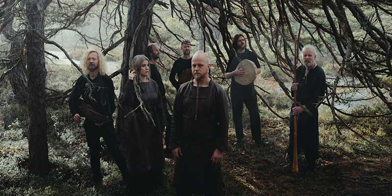
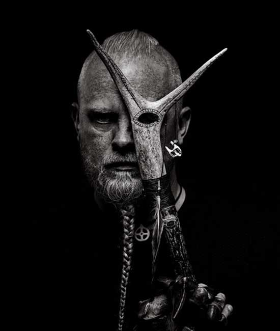
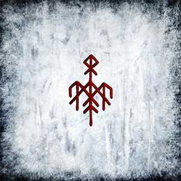
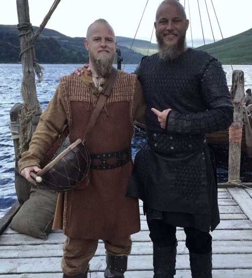

Descubriendo Wardruna: El renacimiento de la música nórdica antigua
Wardruna es una banda de folk nórdico formada en Noruega en 2003 por Einar Selvik, también conocido como Kvitrafn, quien anteriormente formaba parte de la escena del black metal noruego. El proyecto nació con la visión de crear música basada en las antiguas tradiciones nórdicas, utilizando instrumentos tradicionales e históricos para recrear sonidos ancestrales que transportan al oyente a la era vikinga.
La esencia fundamental de Wardruna reside en su profunda conexión con la naturaleza y las runas nórdicas. De hecho, el nombre de la banda significa literalmente "guardián de las runas", reflejando su objetivo de preservar y revitalizar este antiguo sistema de escritura que no solo servía como alfabeto, sino también como símbolos de poder y significado espiritual en la tradición escandinava pre-cristiana.
Lo que hace verdaderamente único a Wardruna es su compromiso con la autenticidad histórica. Utilizan instrumentos como el tagelharpa (lira de crin), el kravik-lyre (lira tradicional), el bukkehorn (cuerno de cabra), tambores de piel fabricados artesanalmente y otros artefactos sonoros reconstruidos según técnicas antiguas. Esta dedicación a la fidelidad histórica ha convertido a Wardruna en uno de los representantes más respetados del movimiento de recuperación de la música tradicional nórdica.
Sus composiciones están profundamente enraizadas en la mitología nórdica, los ciclos de la naturaleza y la sabiduría ancestral. A diferencia de muchas bandas que simplemente utilizan elementos folclóricos como decoración, Wardruna realiza una exhaustiva investigación histórica y arqueológica, consultando fuentes académicas y tradiciones orales para recrear fielmente los sonidos que podrían haber resonado en los fiordos noruegos hace más de mil años.
A lo largo de los años, Wardruna ha ganado reconocimiento internacional, especialmente tras su colaboración en la banda sonora de la popular serie de televisión Vikings. Sin embargo, más allá de su éxito comercial, el proyecto representa un puente entre el pasado y el presente, permitiéndonos experimentar la profunda espiritualidad y conexión con la naturaleza que caracterizaba a las culturas nórdicas antiguas.
Los guardianes de la tradición: Miembros de Wardruna
El corazón creativo de Wardruna es Einar Selvik, nacido en 1979 en Bergen, Noruega. Como compositor principal y visionario del proyecto, Einar no solo canta sino que también toca una impresionante variedad de instrumentos tradicionales que él mismo ha aprendido a construir. Su profundo conocimiento de la historia y mitología nórdica le ha llevado a ser reconocido como una autoridad en música ancestral escandinava, siendo invitado frecuentemente a dar conferencias en universidades y museos de todo el mundo.
Otro pilar fundamental del grupo es Lindy-Fay Hella, cuya etérea y poderosa voz añade una dimensión única al sonido de la banda. Lindy-Fay se unió al proyecto desde sus inicios y su técnica vocal incorpora elementos del kulning (antiguo canto de pastoreo escandinavo) que servía originalmente para llamar al ganado en las montañas.
Con el paso del tiempo, Wardruna ha contado con la colaboración de numerosos músicos invitados, especialmente para sus conciertos en vivo, donde el número de integrantes puede aumentar para recrear la compleja textura sonora que caracteriza sus grabaciones.
El legado musical: Discografía de Wardruna
La obra de Wardruna se organiza principalmente alrededor de ambiciosos proyectos conceptuales que exploran diferentes aspectos de la cosmología nórdica. Su discografía incluye:
Trilogía Runaljod (El sonido de las runas)
- Runaljod - Gap Var Ginnunga (2009): El primer álbum de la banda explora las primeras ocho runas del Futhark antiguo (alfabeto rúnico). Su título hace referencia al vacío primordial que existía antes de la creación según la mitología nórdica. Destacan temas como "Hagal" y "Bjarkan", dedicados a las runas correspondientes.
- Runaljod - Yggdrasil (2013): El segundo trabajo de la trilogía aborda las siguientes ocho runas y está centrado en el Yggdrasil, el árbol cósmico que conecta los nueve mundos en la cosmología nórdica. "Rotlaust Tre Fell" (El árbol sin raíces cae) se convirtió en una de sus canciones más emblemáticas.
- Runaljod - Ragnarok (2016): Completando la trilogía, este álbum explora las últimas ocho runas y el concepto del Ragnarok, la batalla final de la mitología nórdica. Con "Odal" y "Wunjo", el círculo conceptual iniciado siete años antes se cierra magistralmente.
Trabajos posteriores
- Skald (2018): Un álbum más íntimo donde Einar Selvik presenta versiones minimalistas de canciones de Wardruna junto a nuevas composiciones, enfocándose en la tradición de los skald (poetas-cantores nórdicos).
- Kvitravn (2021): Su trabajo más reciente explora la profunda relación entre los humanos y la naturaleza en la tradición nórdica. El álbum ahonda en la animismo y la conexión espiritual con los animales como guías.
- Birna (2023): El último trabajo de Wardruna explora la simbología del oso en la cultura nórdica antigua. "Birna" (que significa "osa" o "la que pertenece al oso" en nórdico antiguo) profundiza en la conexión chamánica entre humanos y estos poderosos animales, considerados ancestros espirituales en muchas culturas nórdicas.
Los sonidos del pasado: Instrumentos tradicionales de Wardruna
Una de las características más fascinantes de Wardruna es su uso de instrumentos tradicionales nórdicos, muchos de los cuales han sido reconstruidos basándose en hallazgos arqueológicos y fuentes históricas. Entre los principales encontramos:
- Tagelharpa: También conocido como talharpa, es un instrumento de cuerda frotada con arco, cuyas cuerdas están hechas de crin de caballo. Su sonido melancólico y penetrante es característico en muchas composiciones de la banda.
- Kravik-lyre: Una pequeña arpa de mano basada en un instrumento encontrado en Noruega datado del siglo XIII. Produce un sonido cálido y resonante que sirve como base armónica en muchas canciones.
- Bukkehorn: Literalmente "cuerno de cabra", es un instrumento de viento similar a una trompeta primitiva, fabricado a partir de cuernos de animales. Su sonido potente y primitivo evoca las vastas extensiones de los paisajes nórdicos.
- Lur: Un antiguo instrumento de viento fabricado originalmente en corteza de abedul, aunque las versiones más recientes pueden ser de madera o incluso de bronce. Puede alcanzar más de 2 metros de longitud y produce un sonido impresionante que retumba a gran distancia.
- Tambores de piel: Fabricados artesanalmente siguiendo técnicas ancestrales, estos instrumentos de percusión utilizan pieles de animales tensadas sobre marcos de madera. Producen diferentes tipos de sonidos según su tamaño y la tensión de la piel.
- Kraviklyra: Una variante de lira nórdica con una rica sonoridad que añade profundidad a las composiciones.
Einar Selvik no solo toca estos instrumentos, sino que ha aprendido a fabricarlos personalmente, siguiendo las técnicas tradicionales para asegurar la autenticidad del sonido que Wardruna busca recrear.
Más allá de la música: El impacto cultural de Wardruna
El impacto de Wardruna trasciende lo meramente musical, convirtiéndose en un fenómeno cultural que ha contribuido significativamente al renacimiento del interés por la cultura nórdica antigua. Algunos aspectos destacados de su influencia incluyen:
Colaboración con "Vikings"
La serie de televisión Vikings contó con la participación de Einar Selvik tanto en la banda sonora como en una breve aparición como actor. Esta colaboración llevó la música de Wardruna a millones de espectadores en todo el mundo, generando un renovado interés por la música tradicional nórdica.
Conferencias y talleres
Einar Selvik es frecuentemente invitado a universidades y centros culturales para impartir conferencias sobre música tradicional nórdica, runas y mitología escandinava. Estos eventos académicos demuestran el serio fundamento histórico y antropológico que sustenta el proyecto.
Festivales y eventos
Wardruna ha contribuido a la creación y popularización de festivales dedicados a la música folk y neopagana, creando espacios donde las personas pueden conectar con sus raíces culturales europeas. Sus conciertos, a menudo realizados en ubicaciones con significado histórico como antiguos asentamientos vikingos o entornos naturales impresionantes, se convierten en experiencias casi rituales para los asistentes.
Influencia en otras bandas
El éxito de Wardruna ha inspirado a numerosos artistas a explorar sus propias tradiciones musicales ancestrales. Su enfoque de investigación histórica rigurosa combinada con sensibilidad artística contemporánea ha establecido un nuevo estándar para la música de recreación histórica.
Renovación de las tradiciones
Quizás la contribución más importante de Wardruna sea su papel en la revitalización de tradiciones culturales que estaban en peligro de perderse. Al traer estos sonidos ancestrales a audiencias modernas, la banda ayuda a mantener vivo un importante patrimonio cultural inmaterial europeo.